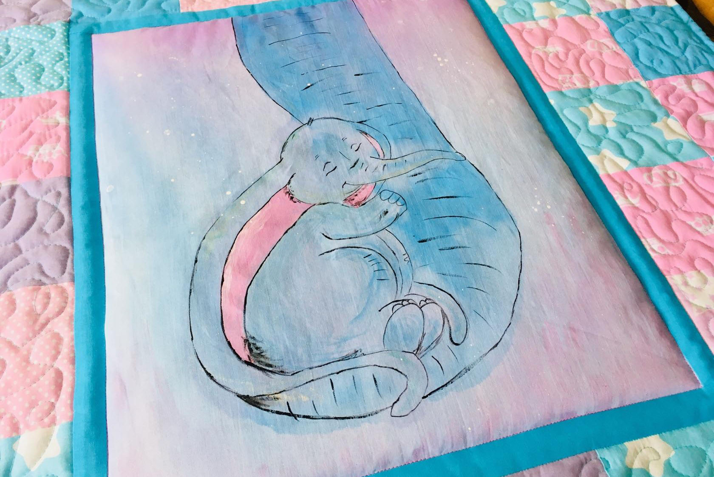

Биография
Уильям Сидни Портер родился 11 сентября 1862 г. в городе Гринсборо, штат Северная Каролина. В трехлетнем возрасте он лишился матери, умершей от туберкулеза. Позже попал под опеку своей тетки по отцу. После школы учился на фармацевта, работал в аптеке. Затем работал кассиром-бухгалтером в банке в техасском городе Остине. Был обвинён в растрате и полгода скрывался от правоохранителей в Гондурасе, затем в Южной Америке. По возвращении в США был осужден и посажен в тюрьму Колумбус штата Огайо, где провел три года (1898—1901).
В тюрьме Портер работал в лазарете и писал рассказы, подыскивая себе псевдоним. В конце концов остановил свой выбор на варианте О. Генри (часто неверно записывается наподобие ирландской фамилии O’Henry — О’Генри). Происхождение его не совсем ясно. Сам писатель утверждал в интервью, что имя Генри взято из колонки светских новостей в газете, а инициал О. выбран как самая простая буква. Одной из газет он сообщил, что О. расшифровывается как Olivier (французское имя Оливье), и действительно, несколько рассказов он опубликовал там под именем Olivier Henry. По другим данным, это имя известного французского фармацевта Этьена Океана Генри (Etienne Ocean Henry), медицинский справочник которого был популярен в то время. Ещё одну гипотезу выдвинул писатель и учёный Гай Дэвенпорт: «О. Генри» не что иное, как сокращение названия тюрьмы, где сидел автор — Ohio Penitentiary. Первый свой рассказ под этим псевдонимом — «Рождественский подарок Дика-Свистуна», напечатанный в 1899 в «Журнале Мак Клюра» (Mc Clure’s Magazine), — он написал в тюрьме.
Первая книга рассказов О. Генри — «Короли и капуста» (Cabbages and Kings) — вышла в 1904. За ней последовали: Четыре миллиона (The four million, 1906), «Горящий светильник» (The trimmed Lamp, 1907), «Сердце Запада» (Heart of the West, 1907), «Голос города» (The Voice of the City, 1908), «Благородный жулик» (The Gentle Grafter, 1908), «Пути судьбы» (Roads of Destiny, 1909), «Избранное» (Options, 1909), «Точные дела» (Strictly Business, 1910) и «Водовороты» (Whirligigs, 1910).
В конце жизни страдал от цирроза печени и диабета.[1] Писатель скончался 5 июня 1910 г. в Нью-Йорке.
В сборник «Постскриптумы» (Postscripts), изданный уже после смерти О. Генри, вошли фельетоны, наброски и юмористические заметки, написанные им для газеты «Почта» (Хьюстон, штат Техас, 1895—1896). Всего О. Генри написано 273 рассказа, полное собрание его произведений составляет 18 томов..